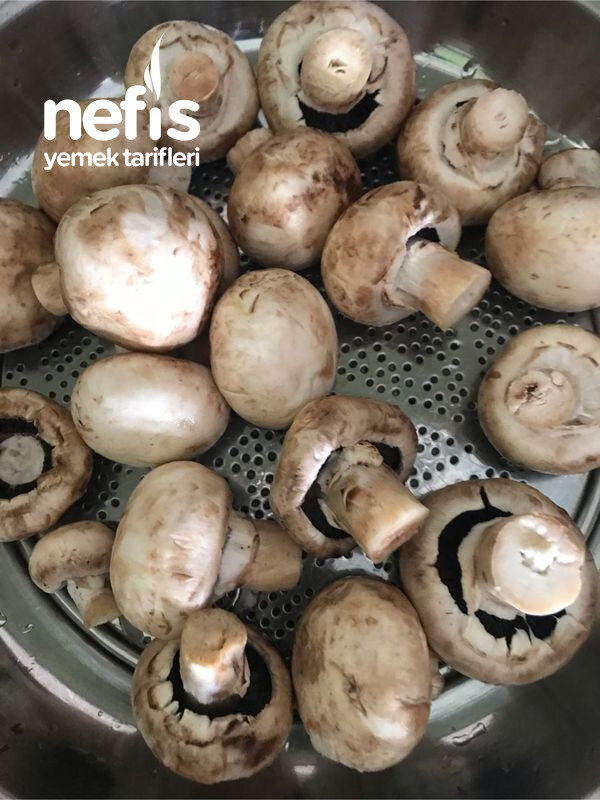

🍽️ 6-8 kişilik⏱️ Hazırlık: 10 dk🔥 Pişirme: 20 dk🏷️ Kahvaltılık Tarifler
Malzemeler
- Yarım kg mantar
- 2 parça tavuk incik
- 2 kaşık zeytinyağı
- Kaşar rendesi
- Tuz
Hazırlanışı
- 2 kaşık zeytinyağında küçük doğradığımız tavuk etlerini kavuruyoruz.
- Yıkamış olduğumuz mantarları doğrayıp ilave ediyoruz.
- Su salmadan harlı ateşte 7-8 dakika kavuruyoruz.
- Çok az tuz ilave ediyoruz.
- Varsa küçük güveç kaplara, yoksa ısıya dayanıklı fırın kaplarına kişi sayısı kadar paylaştırıyoruz. ( borcamda yapıp piştikten sonra da paylaştırılabilir).
- Üzerini kaşar rendesiyle kaplıyoruz.
- Fırın tepsisine koyup kaşarlar hafif kızarasıya kadar pişiriyoruz. Nefis kahvaltılığımız hazır. Afiyet olsun 😊.